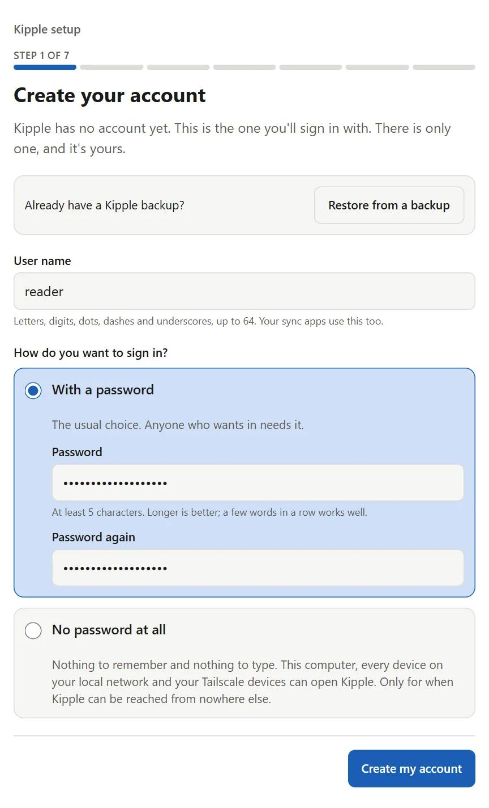
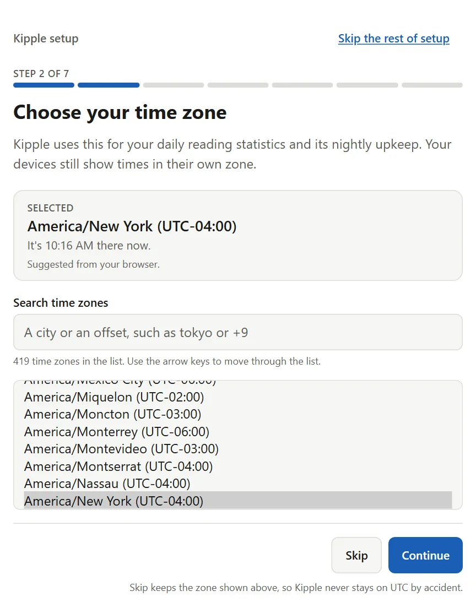
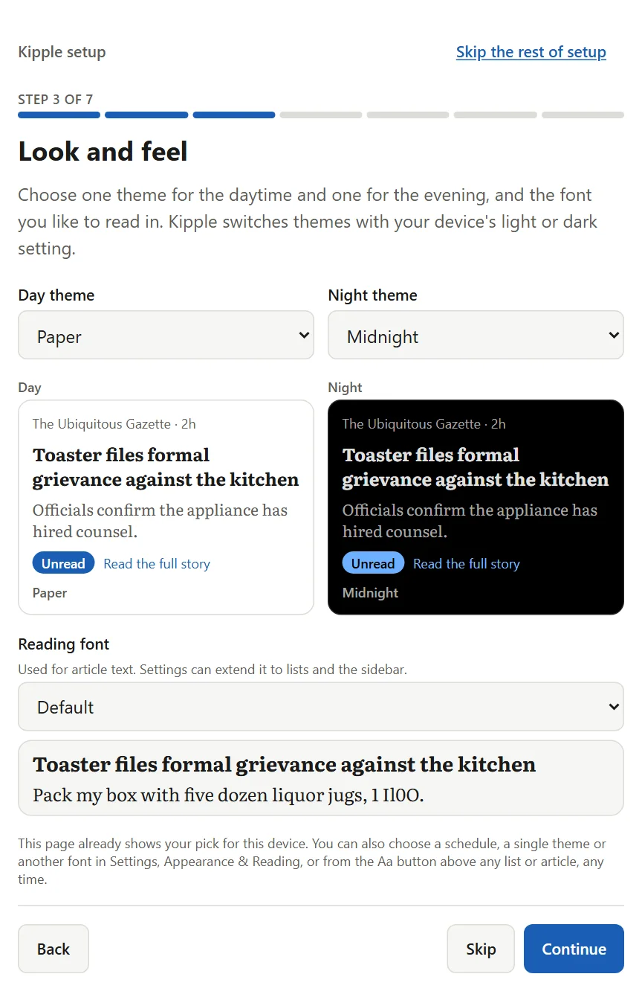

Self-hosted RSS reader.
Single user. Go and SQLite. Syncs over the Google Reader API.
kipple /ˈkɪpəl/ n. Philip K. Dick's word for the useless things that pile up when nobody is looking. Your unread count, mostly.
420
unread
across 6 feeds
across 6 feeds
- Unsung187
- 512 Pixels101
- Storied Colors69
- Electrek42
- McSweeney's13
- Saturday Down South8
Screenshots


What it does
- feeds
- Polls every 30 minutes, or on a per-feed interval. Folders nest up to eight levels. OPML import and export.
- reading
- Layouts per device, folder or feed. Color schemes with separate day and night picks. Saved searches and keyword filters that mute, star, highlight or mark read.
- retention
- Keeps the newest 50 to unlimited items per feed. Starred items are never deleted.
- sync
- Google Reader API at
/api/greader.php. Setup is in the README. - offline
- Installs from the browser as a phone app (needs HTTPS). Opened articles read offline.
- stats
- Reading time and a yearly summary, stored in your database.
- built with
- Claude Code. Most code, tests and docs are written by AI coding agents.
- left out
- AI features, notifications, social features, podcasts, tags, webhooks, more than one user.
Install it
Kipple is a signed Docker image for linux/amd64 and linux/arm64.
docker run -d --name kipple --restart unless-stopped -p 127.0.0.1:1919:1919 -v kipple_data:/data --read-only --tmpfs /tmp:size=64m,mode=1777 --cap-drop ALL --security-opt no-new-privileges ghcr.io/wptk/kipple:1.5.1Or as a compose file. Save it as docker-compose.yml and run docker compose up -d.
services:
kipple:
image: ghcr.io/wptk/kipple:1.5.1
container_name: kipple
restart: unless-stopped
ports: ["127.0.0.1:1919:1919"]
volumes: ["kipple_data:/data"]
read_only: true
tmpfs: ["/tmp:size=64m,mode=1777"]
cap_drop: [ALL]
security_opt: ["no-new-privileges:true"]
volumes:
kipple_data:Open http://127.0.0.1:1919 to create the account.
- The port is published on 127.0.0.1 only. For other devices use HTTPS or a private network, never plain http.
- Until the account exists, anyone who can reach the port can claim it.
- An instance with no password is for localhost or a private network such as Tailscale only. Anyone who can reach it has full access.
- Backups contain password hashes and feed logins.
Other machines, upgrades, backups, reverse proxy and building from source: deploy guide.
Setup



Where it stands
v1.5.1 is the current stable release.
Changelog · Deploy guide · Reverse proxy · Compatibility · Threat model · History